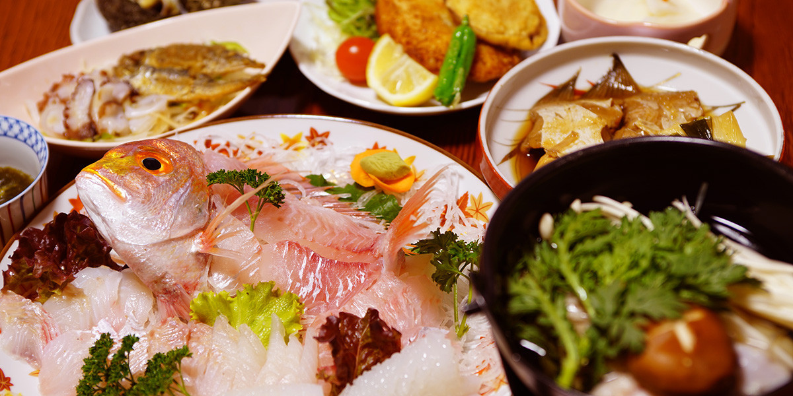
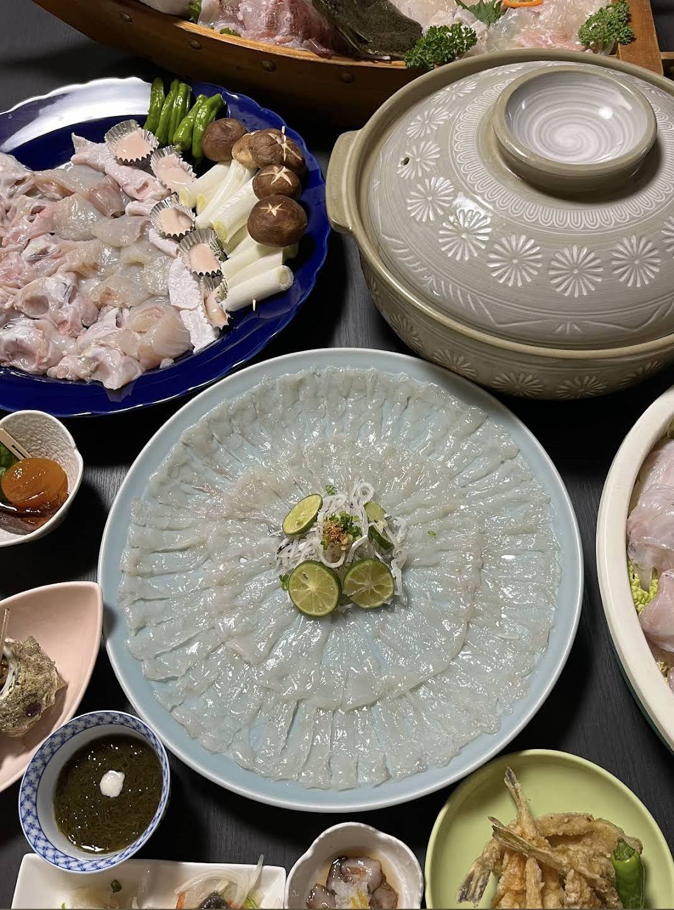
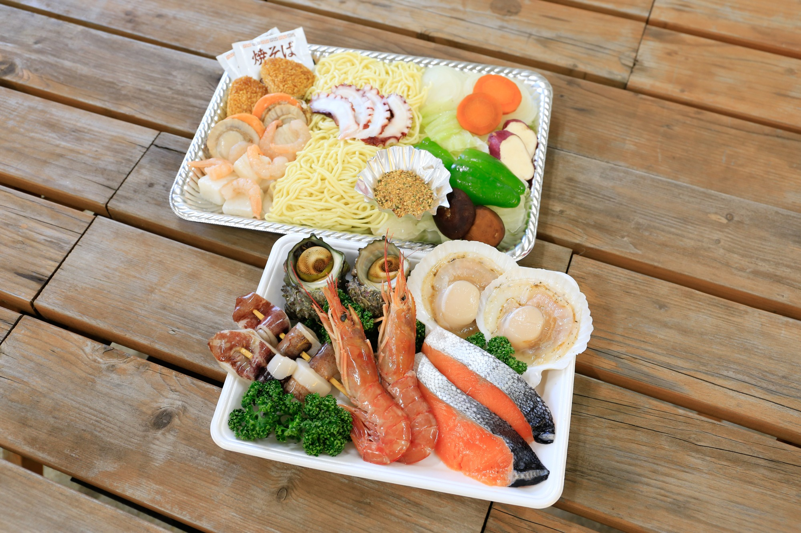
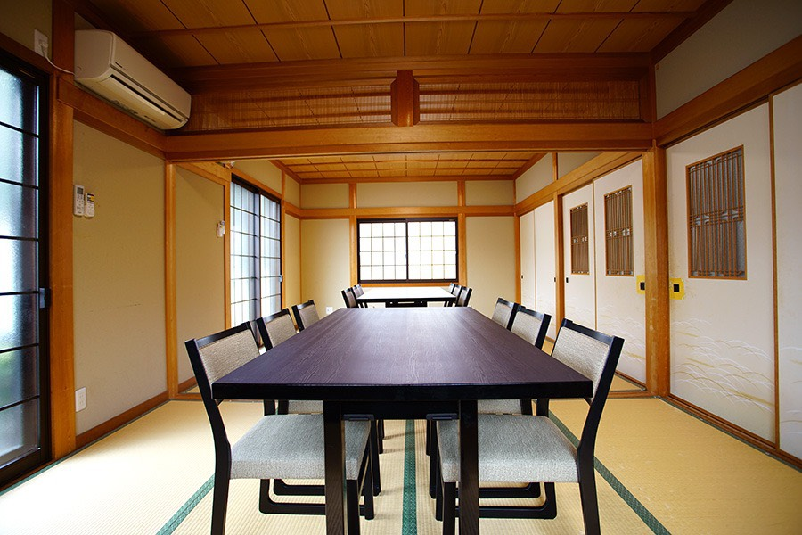

女将自家製「へしこ」
へしことは、若狭・美浜の郷土料理。
鯖などの青魚を塩漬けし、
米ぬかでさらに漬け込んで発酵させた、
福井に古くから伝わる保存食です。
またべゑのへしこは、女将自家製。
発酵による深い旨みと心地よい塩気が、
ごはんにもお酒にもよく合います。
食べ方いろいろ
- へしこの刺身
薄くスライスして、
そのままで。
お酒のあてに最高です。 - へしこ茶漬け
炙ったへしこを温かいごはんに。
出汁をかけて締めの一品。 - へしこパスタ
オイルパスタと相性抜群。
塩気で味付け不要。

女将が朝、市場で競った地魚と、
若狭の海の幸。
女将は朝、自ら漁港へ出向き、
その日の活きの良い魚を競り落とします。
漁師町だからこそ、活魚をそのまま宿で味わっていただける、これがまたべゑのいちばんの自慢です。
1泊2食付き「地魚姿造りプラン」では、その日の旬の魚を使った姿造りをお出しします。
何の魚が出るかは、その日の海次第。
▶ ご自身で釣ったお魚をお持ち込みいただき、
調理することも可能です。
詳しくは 釣りページをご覧ください。

日本最北端のふぐ養殖地、若狭湾。
寒い海で身が締まったトラフグは、
歯ごたえと旨味が格別です。
透き通る薄造りの「てっさ」、
出汁まで美味しい「てっちり」（ふぐちり鍋）、
香ばしい焼きふぐ、唐揚げまで、
ふぐ尽くしのコースをご用意できます。

※ふぐ料理は10月〜3月の期間限定。前日までにご予約ください。
越前がには冬の福井の代名詞。
茹でガニ・刺身・
焼きガニ・カニすき・カニみそまで、
フルコースでご用意できます。
若狭の海は、季節ごとに表情が変わります。当宿でお出しできる旬の海の幸をご紹介します。
| 11月〜3月 | 若狭ふぐ てっさ・ てっちり・焼きふぐ・ 唐揚げ |
|---|---|
| 11月〜3月 | 越前がに 茹で・刺身・焼き・カニすき |
| 夏季 | 海の幸 BBQプラン 1日1組3〜6名様限定 |
※季節料理は仕入れ状況により変動します。詳しくはお電話でご相談ください。
サザエ・ホタテ・イカ・大ぶりエビに、若狭の地野菜と若狭牛。
屋外でみんなで楽しむ、賑やかな一夜にぴったりのBBQプラン。
サイクリングや釣りで疲れた体に、
炭火で焼きたての貝や肉を頬張る幸せ。
仲間や家族との旅にどうぞ。

お食事は畳敷きの専用食事処にて
お召し上がりいただきます。
落ち着いた和の空間で、
ゆっくりとお料理をお楽しみください。

へしことは、若狭・美浜の郷土料理。
鯖などの青魚を塩漬けし、
米ぬかでさらに漬け込んで発酵させた、
福井に古くから伝わる保存食です。
またべゑのへしこは、女将自家製。
発酵による深い旨みと心地よい塩気が、
ごはんにもお酒にもよく合います。
1泊朝食付きプラン（¥6,600）の朝食は、釜炊きごはんと焼魚を中心とした和朝食です。
釣りや早朝出発のお客様には、
朝食を「おにぎり」に
変更することも承ります。
お申し込み時にひとことお伝えください。
※アレルギー対応・苦手な食材については、ご予約時にお気軽にお伝えください。可能な限り対応させていただきます。